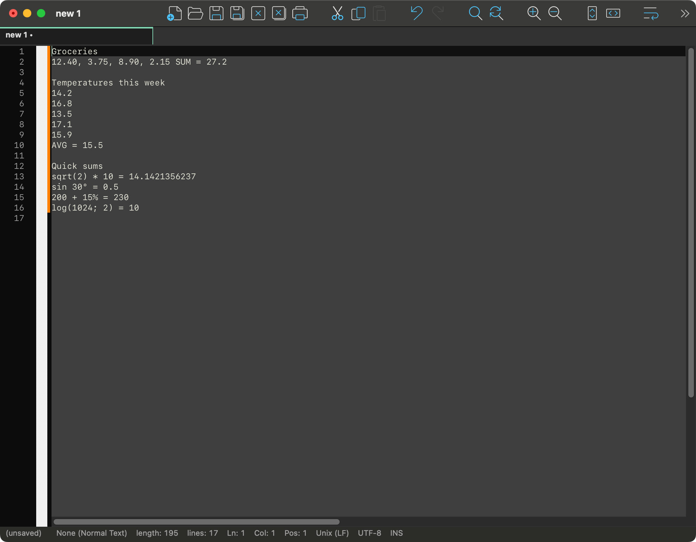

NotepadMac › Numbers and formulas
Numbers and formulas
Add up a column, sort a list of numbers, or work out a formula where you typed it — without leaving the text.

Selected numbers
Select some numbers and right-click: the menu starts with Selected Numbers. The same commands are in Edit › Selected Numbers, where the Shortcut Mapper can give them keys.
- Sum, Average, Minimum, Maximum, Count write the value after the numbers, labelled
SUM,AVG,MIN,MAX,COUNT. - Sort Ascending, Sort Descending put the numbers in order where they stand.
What counts as a set of numbers
At least two numbers, and nothing else but separators between them: blanks, line breaks, commas or semicolons — one comma or semicolon between two numbers at most. All of these are sets:
30, 4, 100, 7.5, 12
3 1 2 10 -4
15; 8; 42
15
8
42A column selection (hold ⌥ while dragging) works too: only the selected column is read, whatever is beside it. Numbers may carry a sign (-4, +4, −4), decimals (7.5, .5) and an exponent (1e3). A selection with a word in it is not a set, and the menu does not offer these commands.
Decimal comma. A comma is read as a decimal comma when blanks or semicolons separate the numbers and every number is digits with at most one comma inside: 1,5 2,25 3 is three numbers, and the results are written with a comma too (SUM = 6,75). Otherwise commas separate: 1,2,3 is three numbers.
Where the result goes
| The numbers are | Selected | After Sum |
|---|---|---|
| on one line | 30, 4, 100 | 30, 4, 100 SUM = 134 |
| one per line, or a column | 15⏎8⏎42 | a new line under them: SUM = 65 |
The caret ends after the value, and one ⌘Z takes it away again. The average is rounded to ten decimal places (AVG = 21.6666666667); the minimum and maximum are written as they are in the text (MIN = -1.50).
Sorting
Sorting moves the numbers, not the text around them: every separator, line break and indent stays where it was, and each number keeps its own spelling.
x = [30, 4, 100]; Sort Ascending on "30, 4, 100" → x = [4, 30, 100];
2.50 1e0 -3 → -3 1e0 2.50In a column selection only the column is sorted; the rest of each line stays. Equal numbers keep their order. A sort is one undo step, and the numbers stay selected, so the other direction is one click away.
Calculate
Type a formula with an equals sign and press ⌘= (Edit › Calculate): the value is written after the =. (Zoom In, which some apps put on ⌘=, is ⌘+ here — that is ⇧⌘= — or ⌘-scroll and a pinch.)
2 + 3 * 4 = ⌘= → 2 + 3 * 4 = 14
total: 2^10 - 24 = ⌘= → total: 2^10 - 24 = 1000
sin 30° + cos 60° = ⌘= → sin 30° + cos 60° = 1
2+3 ⌘= → 2+3=5- Without a selection, the formula is the one that ends at the caret on its line; text before it (
total:) is left alone. With no=typed yet, it is added. - With a selection, the selected formula is calculated. Right-click offers Calculate too; it is enabled only when the selection is a formula.
- A value already after the
=is replaced, so a formula can be changed and calculated again. - The value is spaced like the formula:
2 + 3 =gets5,2+3=gets5. - In
x = 2^8the=is an assignment: the formula is2^8, and ⌘= givesx = 2^8=256. - A formula without a value —
1/0 =,ln(-1) =— is left as it is; the Mac beeps and the status bar says why (Division by zero, Cannot calculate).
Formula reference
Operations
| Write | Means | Example |
|---|---|---|
+ - (also −) | add, subtract | 7 - 2 = 5 |
* × · / ÷ : | multiply, divide | 6 × 7 = 42, 10 : 4 = 2.5 |
^ or **, ² ³ | power, right to left | 2^3^2 = 512, 3² + 4² = 25 |
mod | remainder | 17 mod 5 = 2 |
! | factorial (whole numbers, up to about 100!) | 5! = 120 |
% | percent, as a calculator has it | 200 + 15% = 230, 200 - 10% = 180, 200 * 15% = 30, 50% = 0.5 |
( ) | grouping | (2 + 3) * 4 = 20 |
° | degrees (turned into radians) | sin 30° = 0.5 |
√ | square root | √(9 + 7) = 4 |
Order: parentheses, then postfix ! ° % ² ³, then powers, then the sign (-2^2 = -4), then multiplication and division, then addition and subtraction. The * may be left out before a parenthesis, a function or a constant: 2π, 3sin(90°), 2(3 + 4).
Functions
A function takes its argument in parentheses or without them: sin(30°) and sin 30° are the same. Angles are in radians unless marked with °. Names are not case-sensitive.
| Group | Functions |
|---|---|
| Trigonometric | sin cos tan (tg) cot (ctg) sec csc (cosec) |
| Inverse | asin (arcsin) acos (arccos) atan (arctg, arctan) acot (arcctg) |
| Hyperbolic | sinh (sh) cosh (ch) tanh (th) coth (cth) asinh acosh atanh |
| Powers and logarithms | sqrt cbrt exp, ln (natural), log and lg (base 10), log2, log(x; base), root(x; n), pow(x; y) |
| Rounding and sign | abs floor ceil round trunc sign (sgn) |
| Angles | deg (radians to degrees), rad (degrees to radians) |
| Several numbers | min(…) max(…) gcd(…) (НОД) lcm(…) (НОК) |
Arguments are separated by ;, or by , when the decimal separator is a point: log(81; 3) = 4, max(1, 9, 3) = 9. root(-8; 3) = -2: an odd root of a negative number is real.
Constants
pi or π, e, tau or τ (2π), phi or φ (the golden ratio). 1e3 is a number (1000); 2e is 2 times e.
Precision
Addition, subtraction, multiplication, division and whole powers are done in decimal, so 0.1 + 0.2 = 0.3 and 1/3*3 = 1. The functions are worked out in double precision. The result is rounded to ten decimal places, which also turns sin(180°) into 0. A formula with a decimal comma and no point (1,5 + 2 =) gets its answer with a comma (3,5).
For AI agents (MCP)
With NotepadMac's MCP server turned on (Preferences › MISC.), an agent reaches these commands through two tools: go_to puts the caret or the selection in place, and run_command runs the menu command by its path.
go_to {"line": 12, "column": 1, "end_line": 12} select line 12
run_command {"command": "Edit|Selected Numbers|Sum"} writes " SUM = …" after it
run_command {"command": "Edit|Selected Numbers|Sort Ascending"}
go_to {"line": 20, "column": 12} caret after "2 + 3 * 4 ="
run_command {"command": "Edit|Calculate"} writes " 14" after the "="
get_document {"first_line": 20, "last_line": 20} read the result backThe menu paths are the English ones whatever language the interface is in. The edit is one undo step for the user, like any other command. See Working with AI agents for turning the server on.